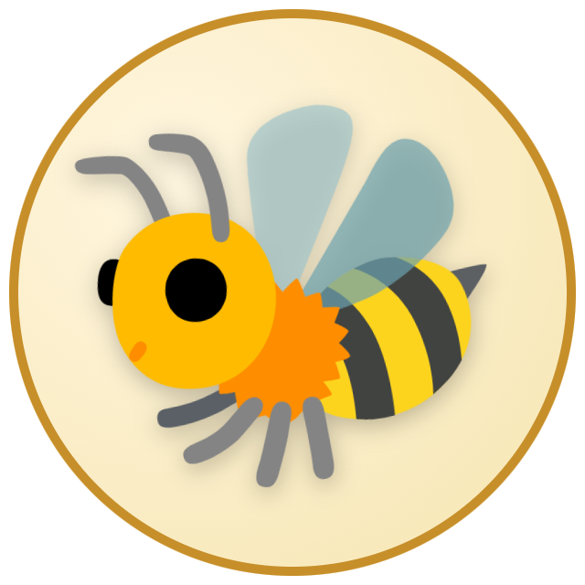

VibeHive The Address · Baner VibeHive Vibe · the shared spirit · Hive · many hands, one rhythm A community-run festival & contribution ledger. Neighbours propose events, residents contribute, and every rupee is receipted with a tamper-evident hash you can verify from any phone — so the celebration stays warm and the books stay clean.